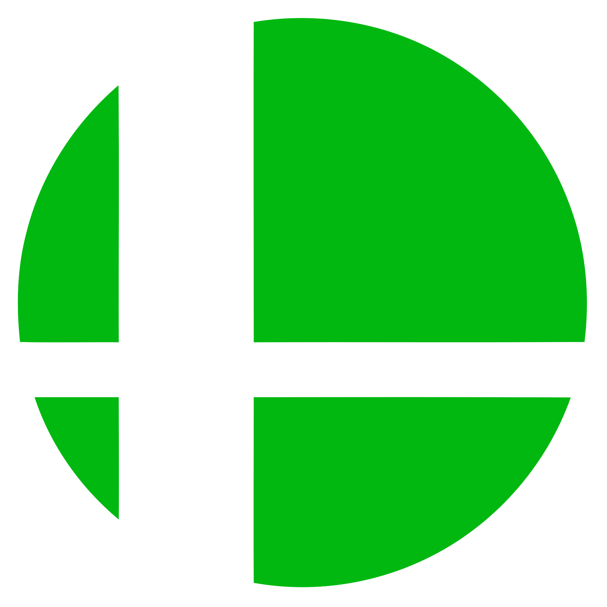

Project 1
Game Making and Design: Ghost
For the first Negotiated Project I used Construct 2 to make a shooter game. My main goal was to make the game I made in Construct 2 to be more polished and have a key balance on progression and rewards
Ghost is a game where you as the player, kill other enemies or "ghosts" in that regard. More binds are available the more points, for instance at 90, the player gets the Bubble Shield, which helps against the horde of enemies
The premise of my game was that as a top down shooter, the more you succeeded in the game, the more you were rewarded. I used different abilities at different point thresholds which gave more variety to my game
Problems
The main problems I faced were all around the program not working in an instance or just not working. The time scale command didn't work the way it should have, and I needed to find a work around with stopping all sprites on the setup
This in turn makes Construct 2 a functional program but a flawed program that you really need to persevere to succeed.

Sneaky Secret Thing